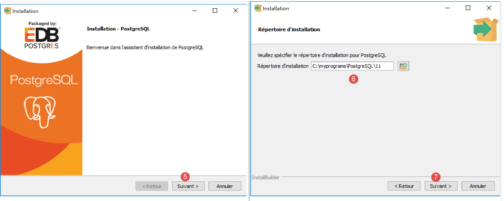
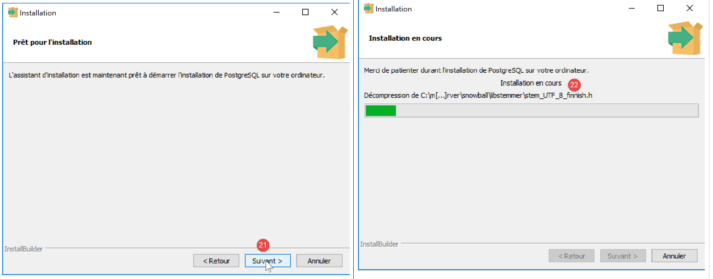
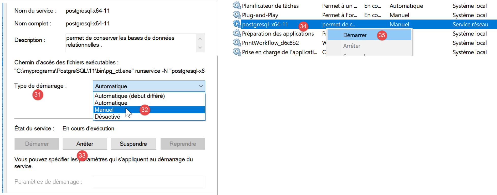
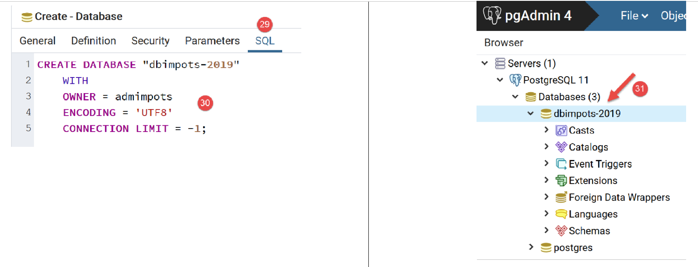
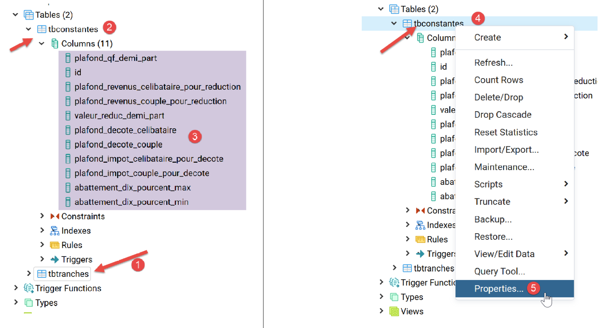
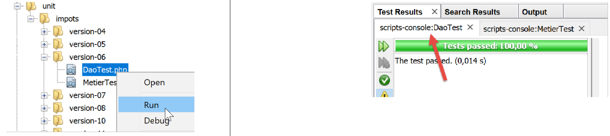

14. Exercice d’application – version 6

Nous venons d’implémenter la structure en couches suivante :

Le SGBD utilisé dans les exemples était MySQL. Au paragraphe lien nous avions remarqué que rien dans la classe implémentant la couche [dao] ne laissait supposer qu’on utilisait un SGBD particulier. C’est ce que nous allons vérifier maintenant en utilisant un autre SGBD, le SGBD PostgreSQL. L’architecture en couches devient la suivante :

14.1. Installation du SGBD PostgreSQL
Les distributions du SGBD PostgreSQL sont disponibles à l’URL [https://www.postgresql.org/download/] (mai 2019). Nous montrons l’installation de la version pour Windows 64 bits :


- en [1-4], on télécharge l’installateur du SGBD ;
On lance l’installateur téléchargé :

- en [6], indiquez un dossier d’installation ;

- en [8], l’option [Stack Builder] est inutile pour ce qu’on veut faire ici ;
- en [10], laissez la valeur qui vous sera présentée ;

- en [12-13], on a mis ici le mot de passe [root]. Ce sera le mot de passe de l’administrateur du SGBD qui s’appelle [postgres]. PostgreSQL l’appelle également le super-utilisateur ;
- en [15], laissez la valeur par défaut : c’est le port d’écoute du SGBD ;

- en [17], laissez la valeur par défaut ;
- en [19], le résumé de la configuration de l’installation ;


Sous windows, le SGBD PostgreSQL est installé comme un service windows lancé automatiquement. La plupart du temps ce n’est pas souhaitable. Nous allons modifier cette configuration. Tapez [services] dans la barre de recherche de Windows [24-26] :

- en [29], on voit que le service du SGBD PostgreSQL est en mode automatique. On change cela en accédant aux propriétés du service [30] :

- en [31-32], mettez le démarrage en mode manuel ;
- en [33], arrêtez le service ;
Lorsque vous voudrez démarrer manuellement le SGBD, revenez à l’application [services], cliquez droit sur le service [postgresql] (34) et lancez le (35).
14.2. Activation de l’extension PDO du SGBD PostgreSQL
Nous allons modifier le fichier [php.ini] qui configure PHP (cf paragraphe lien) :

- en [2], vérifiez que l’extension PDO de PostgreSQL est activée. Ceci fait, sauvegardez la modification puis relancez Laragon pour être sûrs que la modification va être prise en compte. Ensuite vérifiez la configuration de PHP directement à partir de Laragon [3-5].
14.3. Administrer PostgreSQL avec l’outil [pgAdmin]
Lancez le service windows du SGBD PostgreSQL (cf paragraphe lien). Puis de la même façon que vous avez lancé l’outil [services], lancez l’outil [pgadmin] qui permet d’administrer le SGBD PostgreSQL [1-3] :

Il est possible qu’à un moment donné on vous demande le mot de passe du super-utilisateur. Celui-ci s’appelle [postgres]. Vous avez défini son mot de passe lors de l’installation du SGBD. Dans ce document, nous avons donné le mot de passe [root] au super-utilisateur lors de l’installation.
- en [4], [pgAdmin] est une application web ;
- en [5], la liste des serveurs PostgreSQL détectés par [pgAdmin], ici 1 ;
- en [6], le serveur PostgreSQL que nous avons lancé ;
- en [7], les bases de données du SGBD, ici 1 ;
- en [8], la base [postgresql] est gérée par le super-utilisateur [postgres] ;
Créons tout d’abord un utilisateur [admimpots] avec le mot de passe [mdpimpots] :


- en [17], on a mis [mdpimpots] ;

- en [21], le code SQL que va émettre l’outil [pgAdmin] vers le SGBD PostgreSQL. C’est une façon d’apprendre le langage SQL propriétaire de PostgreSQL ;
- en [22], après validation de l’assistant [Save], l’utilisateur [admimpots] a été créé ;
Maintenant nous créons la base [dbimpots-2019] :

On clique droit sur [23], puis [24-25] pour créer une nouvelle base de données. Dans l’onglet [26], on définit le nom de la base [27] et son propriétaire [admimpots] [28].

- en [30], le code SQL de création de la base ;
- en [31], après validation de l’assistant [Save], la base [dbimpots-2019] est créée ;
Maintenant, nous allons créer la table [tbtranches] avec les colonnes [id, limites, coeffr, coeffn]. Une particularité de PostgreSQL est que les noms de colonnes sont sensibles à la casse (majuscules / minuscules) ce qui n’est habituellement pas le cas avec les autres SGBD. Ainsi avec MySQL, l’ordre [select limites, coeffR, coeffN from tbtranches] fonctionnera même si les colonnes réelles de la table [tbtranches] sont [LIMITES, COEFFR, COEFFN]. Avec PostgreSQL, l’ordre SQL ne fonctionnera pas. On pourrait alors écrire [select LIMITES, COEFFR, COEFFN from tbtranches] mais ça ne fonctionnera toujours pas, car PostgreSQL va exécuter l’ordre [select limites, coeffr, coeffn from tbtranches] : il passe par défaut les noms des colonnes en minuscules. Pour qu’il ne fasse pas cela, il faut écrire : [select "LIMITES", "COEFFR", "COEFFN" from tbtranches], ç-à-d qu’il faut protéger les noms des colonnes avec des guillemets. Pour ces raisons, nous allons donner aux colonnes des noms en minuscules. Les noms des objets d’une base de données peuvent être une source d’incompatibilité entre SGBD, certains noms étant des mots réservés dans certains SGBD et pas dans d’autres.
Nous créons la table [tbtranches] :

- utilisez le bouton [40] pour créer des colonnes ;


- après avoir terminé l’assistant de création par [Save], la table [tbtranches] est créée [52-53] ;
Il nous faut indiquer au SGBD qu’il doit lui-même générer la clé primaire [id] lors de l’insertion d’une ligne dans la table :

- en [56] on accède aux propriétés de la clé primaire [id] ;
- en [59], on indique que la colonne est de type [Identity]. Cela va entraîner que le SGBD va générer les valeurs de la clé primaire ;

- en [62], le code SQL généré pour cette opération ;
La table [tbtranches] est désormais prête.
Nous refaisons les mêmes opérations pour créer la table [tbconstantes]. Nous donnons le résultat à obtenir :



La base [dbimpots-2019] est désormais prête. Nous allons la remplir avec des données.
Comme nous l’avons fait avec MySQL, il est possible d’exporter la base de données [dbimpots-2019] dans un fichier SQL. On peut ensuite importer ce fichier SQL pour recréer la base si on l’a perdue ou détériorée. Nous n’exporterons ici que la structure de la base et non ses données :


Le fichier généré est le suivant :
1 2 3 4 5 6 7 8 9 10 11 12 13 14 15 16 17 18 19 20 21 22 23 24 25 26 27 28 29 30 31 32 33 34 35 36 37 38 39 40 41 42 43 44 45 46 47 48 49 50 51 52 53 54 55 56 57 58 59 60 61 62 63 64 65 66 67 68 69 70 71 72 73 74 75 76 77 78 79 80 81 82 83 84 85 86 87 88 89 90 91 92 93 94 95 96 97 98 99 100 101 102 103 104 105 106 107 108 109 110 111 112 113 114 115 116 117 118 119 120 121 122 | |
14.4. Remplissage de la table [tbtranches]
Nous avons déjà fait ce travail avec le SGBD MySQL au paragraphe lien. Il nous suffit de modifier le fichier [database.json] qui décrit la base de données :

Le fichier [database.json] devient le suivant :
- ligne 2 : le DSN a changé, [pgsql] indiquant qu’on a affaire au SGBD Postgres ;
- lignes 5 et 9 : on a précédé le nom des tables par le nom du schéma auquel elles appartiennent [public]. Ce n’était pas indispensable puisque que [public] est le schéma utilisé par défaut lorsqu’aucun schéma n’est précisé dans le nom de la table ;
- lignes 6-8, 10-19 : les noms des colonnes ont changé ;
Le script [MainTransferAdminDataFromJsonFile2PostgresDatabase.php] de remplissage de la base [dbimpots-2019] est le suivant :
Commentaires
Seules les lignes 12-21 qui chargent les fichiers nécessaires à l’exécution de l’application changent. Elles changent parce que la valeur [__DIR__] change : elle désigne désormais le dossier [version-07/Main].
Lorsqu’on exécute ce script, on obtient le résultat suivant dans la table [tbtranches] :

- on clique droit sur [1], puis ensuite [2-3] ;
- en [4], on a bien les données des tranches d’impôts ;
On refait la même chose pour la table des constantes [tbconstantes] :


On notera que pour l’exécution du script, l’application Laragon n’a pas besoin d’être active : on n’a besoin ni du serveur Apache, ni du SGBD MySQL. On a seulement besoin du SGBD PostgreSQL dont on a lancé le service windows.
14.5. Calcul de l’impôt

Les couches [dao] (3) et [métier] (2) ont déjà été écrites. Nous avons déjà écrit le script principal pour le SGBD MySQL au paragraphe lien. Il nous suffit de reprendre le script [MainCalculateImpotsWithTaxAdminDataInMySQLDatabase.php] et de l’adapter au SGBD PostgreSQL. Il s’appelle désormais [MainCalculateImpotsWithTaxAdminDataInPostgresDatabase.php] :

Le script [MainCalculateImpotsWithTaxAdminDataInPostgresDatabase.php] est le suivant :
Commentaires
Seules les lignes 12-22 qui chargent les fichiers nécessaires à l’exécution de l’application changent. Elles changent parce que la valeur [__DIR__] change : elle désigne désormais le dossier [version-07/Main].
Résultats d’exécution
Les mêmes que ceux obtenus dans les versions précédentes.
14.6. Tests [Codeception]
Comme pour les versions précédentes, nous validons cette version avec des tests [Codeception] :

14.6.1. Test de la couche [dao]
Le test [DaoTest.php] est le suivant :
Commentaires
- lignes 9-28 : définition de l’environnement du test. Nous utilisons le même, sans la couche [métier], que celui utilisé par le script principal [MainCalculateImpotsWithTaxAdminDataInPostgresDatabase] décrit au paragraphe lien ;
- lignes 34-39 : construction de la couche [dao] ;
- ligne 38 : l’attribut [\$this→taxAdminData] contient les données à tester ;
- lignes 42-44 : la méthode [testTaxAdminData] est celle décrite au paragraphe lien ;
Les résultats du test sont les suivants :

14.6.2. Test de la couche [métier]
Le test [MetierTest.php] est le suivant :
Commentaires
- lignes 9-28 : définition de l’environnement du test. Nous utilisons le même que celui utilisé par le script principal [MainCalculateImpotsWithTaxAdminDataInPostgresDatabase] décrit au paragraphe lien ;
- lignes 34-40 : construction des couches [dao] et [métier] ;
- ligne 39 : l’attribut [\$this→métier] référence la couche [métier]
- lignes 43-49 : les méthodes [test1, test2…, test11] sont celles décrites au paragraphe lien ;
Les résultats du test sont les suivants :